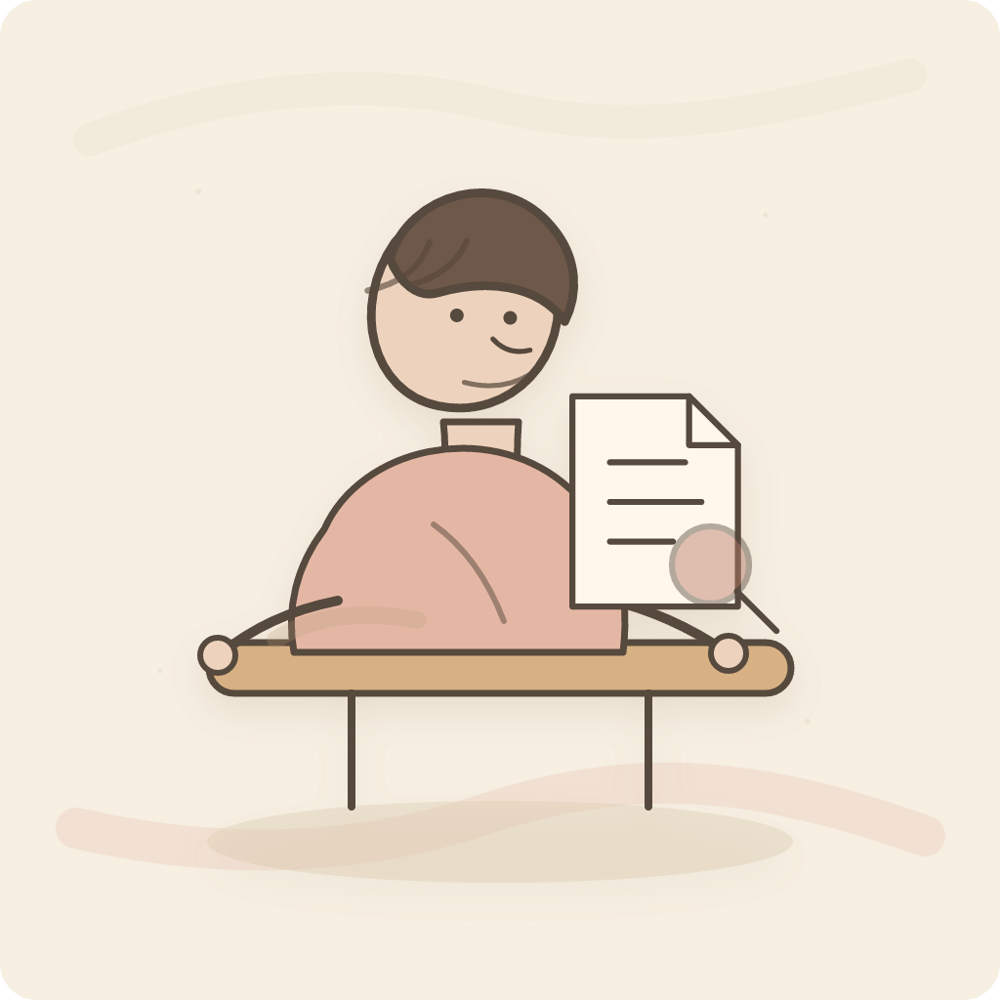
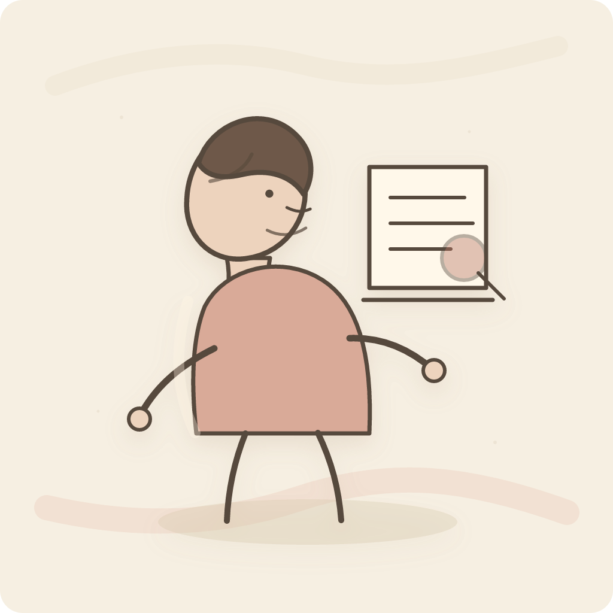
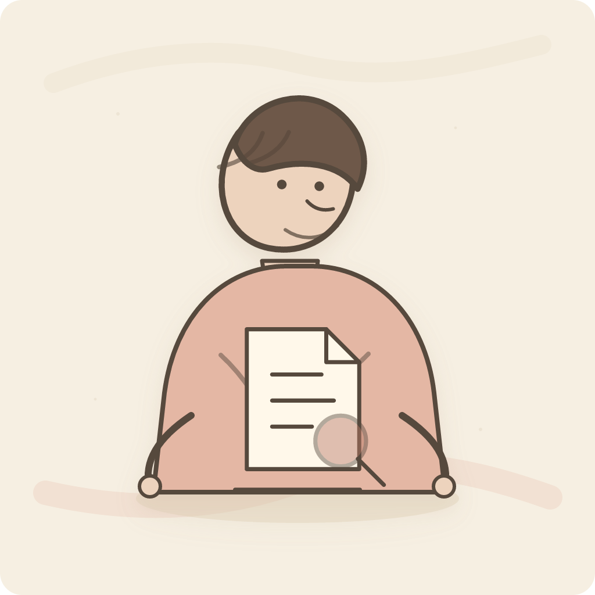

Three one-person directions based on the earlier demo. Each keeps the warm paper/line-art feeling, but the head is physically connected to the body with a neck.

Warm Desk StudyClosest to the reference: storybook linework, seated figure, document review.

Editorial Side ProfileMore mature editorial look with side pose, long coat, and evidence board.

Soft Paper PortraitSimpler rounded portrait style with integrated truth/document symbol.